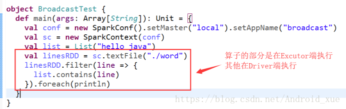

Spark 编程指南
概述
在一个较高的概念上来说，每一个Spark应用程序都包含一个驱动程序，该程序运行着用户的main方法，并在集群上执行各种并行操作。Spark提供的主要抽象是弹性分布式数据集(RDD)，它是跨集群节点分区的元素集合，可以并行操作。 RDDs是通过从Hadoop文件系统(或任何Hadoop支持的其他文件系统)中的文件开始，或者从驱动程序中现有的Scala集合开始，并对其进行转换而创建的。用户还可能要求Spark在内存中持久化一个RDD，从而允许在并行操作之间高效地重用它。最后，RDDs自动从节点故障中恢复。
Spark中的第二个抽象是可用于并行操作的共享变量。默认情况下，当Spark的一个函数作为一组不同节点上的任务并行运行时，它将函数中使用的每个变量的副本发送给每个任务。有时候，一个变量需要在整个任务中，或者在任务和 driver program（驱动程序）之间来共享。Spark支持两种类型的共享变量:广播变量(可以用于在所有节点的内存中缓存一个值)和累加器(他是一个只能被 “added（增加）” 的变量，例如 counters 和 sums)。
本指南在Spark支持的每种语言中都展示了这些特性。如果您启动了Spark的交互式shell——Scala shell的bin/ Spark shell或者Python shell的bin/pyspark，这是最容易的。
Spark依赖
Spark 3.1.2 默认使用 Scala 2.12 来构建和发布直到运行。（当然，Spark 也可以与其它的 Scala 版本一起运行）。为了使用 Scala 编写应用程序，您需要使用可兼容的 Scala 版本（例如，2.12.X）。
要编写一个Spark应用程序，您需要在Spark上添加一个Maven依赖。Spark可通过Maven 中央仓库获取:
groupId = org.apache.spark
artifactId = spark-core_2.12
version = 3.1.2
此外，如果您想访问一个 HDFS 集群，则需要针对您的 HDFS 版本添加一个 hadoop-client（hadoop 客户端）依赖。
groupId = org.apache.hadoop
artifactId = hadoop-client
version = <your-hdfs-version>
最后，需要将一些Spark类导入到程序中。加上以下几行:
import org.apache.spark.SparkContext
import org.apache.spark.SparkConf在Spark 1.3.0之前，您需要显式地导入org.apache.spark.SparkContext._。启用必要的隐式转换
Spark 3.1.2 支持 lambda 表达式 以简明地编写函数，否则您可以使用 org.apache.spark.api.java.function 包中的类。
请注意，Spark 3.1.2中删除了对Java 7的支持。
要用Java编写Spark应用程序，需要在Spark上添加依赖项。 Spark可通过Maven Central获得:
groupId = org.apache.spark
artifactId = spark-core_2.12
version = 3.1.2
此外，如果您希望访问HDFS群集，则需要为您的HDFS版本添加
hadoop-client依赖项。
groupId = org.apache.hadoop
artifactId = hadoop-client
version = <your-hdfs-version>
最后，您需要将一些Spark类导入到您的程序中。 添加以下行:
import org.apache.spark.api.java.JavaSparkContext;
import org.apache.spark.api.java.JavaRDD;
import org.apache.spark.SparkConf;Spark 2.3.1 works with Python 2.7+ or Python 3.4+. It can use the standard CPython interpreter, so C libraries like NumPy can be used. It also works with PyPy 2.3+.
Python 2.6 support was removed in Spark 3.1.2.
Spark applications in Python can either be run with the bin/spark-submit script which
includes Spark at runtime, or by including including it in your setup.py as:
install_requires=[
'pyspark=={site.SPARK_VERSION}'
]To run Spark applications in Python without pip installing PySpark, use the
bin/spark-submit script located in the Spark directory.
This script will load Spark’s Java/Scala libraries and allow you to submit applications to a
cluster.
You can also use bin/pyspark to launch an interactive Python shell.
If you wish to access HDFS data, you need to use a build of PySpark linking to your version of HDFS. Prebuilt packages are also available on the Spark homepage for common HDFS versions.
Finally, you need to import some Spark classes into your program. Add the following line:
from pyspark import SparkContext, SparkConfPySpark requires the same minor version of Python in both driver and workers. It uses the default
python version in PATH,
you can specify which version of Python you want to use by PYSPARK_PYTHON, for example:
$ PYSPARK_PYTHON=python3.4 bin/pyspark
$ PYSPARK_PYTHON=/opt/pypy-2.5/bin/pypy bin/spark-submit examples/src/main/python/pi.py初始化Spark
Spark程序必须做的第一件事是创建一个SparkContext对象，该对象告诉Spark如何访问集群。要创建一个SparkContext，首先需要构建一个包含应用程序信息的SparkConf对象。
每一个 JVM 可能只能激活一个 SparkContext 对象。在创新一个新的对象之前，必须调用 stop() 该方法停止活跃的 SparkContext。
val conf = new SparkConf().setAppName(appName).setMaster(master)
new SparkContext(conf)Spark程序必须做的第一件事是创建一个JavaSparkContext对象，该对象告诉Spark如何访问集群。要创建一个SparkContext，首先需要构建一个包含应用程序信息的SparkConf对象。
SparkConf conf = new SparkConf().setAppName(appName).setMaster(master);
JavaSparkContext sc = new JavaSparkContext(conf);
The first thing a Spark program must do is to create a SparkContext object, which tells Spark
how to access a cluster. To create a SparkContext you first need to build a SparkConf object
that contains information about your application.
conf = SparkConf().setAppName(appName).setMaster(master)
sc = SparkContext(conf=conf)appName参数是应用程序在集群UI上显示的名称。
master是一个Spark, Mesos or YARN 集群
URL,
或者是“local” 字符串以local模式执行.
实际上，在集群上运行时，您不希望在程序中硬编码master，而是使用spark-submit在那里启动应用程序
并接收它。但是，对于本地测试和单元测试，您可以通过“local”运行Spark进程中。
使用Shell
在Spark shell中，一个特殊的 interpreter-aware（可用的解析器）SparkContext 已经为您创建好了，称之为 sc 的变量。。创建自己的SparkContext将不起作用。 您可以使用 --master参数设置SparkContext连接到哪个master上，并且您可以通过将逗号分隔的列表传递给——JARs参数来将jar添加到类路径中。您还可以向shell会话添加依赖项(例如Spark包)，方法是向——Packages参数提供一个用逗号分隔的Maven坐标列表。可能存在依赖关系的任何其他存储库(例如Sonatype)都可以传递到 --repositories 参数。例如，要明确使用四个核（CPU）来运行 bin/spark-shell，使用:
$ ./bin/spark-shell --master local[4]或者，添加代码。jar的类路径，使用:
$ ./bin/spark-shell --master local[4] --jars code.jar使用Maven坐标包括一个依赖项:
$ ./bin/spark-shell --master local[4] --packages "org.example:example:0.1"要获得完整的选项列表，请运行spark-shell—help。在幕后，spark-shell调用更通用的spark提交脚本。
In the PySpark shell, a special interpreter-aware SparkContext is already created for you, in the
variable called sc. Making your own SparkContext will not work. You can set which
master the
context connects to using the --master argument, and you can add Python .zip, .egg or
.py files
to the runtime path by passing a comma-separated list to --py-files. You can also add
dependencies
(e.g. Spark Packages) to your shell session by supplying a comma-separated list of Maven coordinates
to the --packages argument. Any additional repositories where dependencies might exist
(e.g. Sonatype)
can be passed to the --repositories argument. Any Python dependencies a Spark package
has (listed in
the requirements.txt of that package) must be manually installed using pip when
necessary.
For example, to run bin/pyspark on exactly four cores, use:
$ ./bin/pyspark --master local[4]Or, to also add code.py to the search path (in order to later be able to import
code), use:
$ ./bin/pyspark --master local[4] --py-files code.pyFor a complete list of options, run pyspark --help. Behind the scenes,
pyspark invokes the more general spark-submit
script.
It is also possible to launch the PySpark shell in IPython, the
enhanced Python interpreter. PySpark works with IPython 1.0.0 and later. To
use IPython, set the PYSPARK_DRIVER_PYTHON variable to ipython when
running bin/pyspark:
$ PYSPARK_DRIVER_PYTHON=ipython ./bin/pysparkTo use the Jupyter notebook (previously known as the IPython notebook),
$ PYSPARK_DRIVER_PYTHON=jupyter PYSPARK_DRIVER_PYTHON_OPTS=notebook ./bin/pysparkYou can customize the ipython or jupyter commands by setting PYSPARK_DRIVER_PYTHON_OPTS.
After the Jupyter Notebook server is launched, you can create a new “Python 2” notebook
from
the “Files” tab. Inside the notebook, you can input the command %pylab
inline as part of
your notebook before you start to try Spark from the Jupyter notebook.
弹性分布式数据集(RDDs)
Spark围绕弹性分布式数据集(RDD)的概念展开，它是一个容错且可以执行并行操作的元素的集合。创建RDDs有两种方法:在驱动程序中 parallelizing (并行化)已经存在的集合，或在外部存储系统中引用一个数据集，例如共享文件系统、HDFS、HBase或提供Hadoop InputFormat的任何数据源。
Parallelized (并行) 集合
在驱动程序中的已经存在的集合(Scala Seq)上通过调用SparkContext的parallelize方法来创建并行集合。集合的元素被复制，形成一个可以并行操作的分布式数据集。例如，下面是如何创建一个并行的集合来保存数字1到5:
val data = Array(1, 2, 3, 4, 5)
val distData = sc.parallelize(data)一旦创建，该distributed dataset (分布式数据集) (distData)可以并行执行操作。例如，我们可以调用distData.reduce((a, b) => a + b)用于将数组的元素相加。稍后我们将描述对分布式数据集的操作。
Parallelized collections are created by calling JavaSparkContext’s parallelize
method on an existing Collection in your driver program. The elements of the collection
are copied to form a distributed dataset that can be operated on in parallel. For example, here is
how to create a parallelized collection holding the numbers 1 to 5:
List<Integer> data = Arrays.asList(1, 2, 3, 4, 5);
JavaRDD<Integer> distData = sc.parallelize(data);Once created, the distributed dataset (distData) can be operated on in parallel. For
example, we might call distData.reduce((a, b) -> a + b) to add up the elements of
the list.
We describe operations on distributed datasets later on.
Parallelized collections are created by calling SparkContext’s
parallelize method on an existing iterable or collection in your driver program. The
elements of the collection are copied to form a distributed dataset that can be operated on in
parallel. For example, here is how to create a parallelized collection holding the numbers 1 to 5:
data = [1, 2, 3, 4, 5]
distData = sc.parallelize(data)Once created, the distributed dataset (distData) can be operated on in parallel. For
example, we can call distData.reduce(lambda a, b: a + b) to add up the elements of the
list.
We describe operations on distributed datasets later on.
并行集合中一个很重要参数是 partitions（分区）的数量，它可用来切割 dataset（数据集）。Spark将为集群的每个分区运行一个任务(分区和任务是1:1关系)。通常，您需要为集群中的每个CPU分配2-3个分区。通常，Spark尝试根据集群自动设置分区数量。但是，您也可以通过将它作为第二个参数传递给parallelize(例如sc.parallelize(data, 10))来手动设置它。注意:代码中的一些地方使用术语片(分区的同义词)来维护向后兼容性。
-------------------------------------------------------------------------------------------文档扩展-------------------------------------------------------------------------------------------
分区的理解：
一、什么是分区以及为什么要分区?
1）在HDFS中数据的物理性存储是以Block数据块的形式存储。
2）RDD是Spark加载HDFS数据到内存中的抽象，里面不存储数据。RDD是由partion组成的，partion被分布在多个节点上。partion是数据的逻辑存储，实际上不存储数据集。
3）Spark RDD 是一种分布式的数据集，由于数据量很大，因此要它被切分并存储在各个结点的分区当中。从而当我们对RDD进行操作时，实际上是对每个分区中的数据并行操作。
二、分区的3种方式
1、HashPartitioner
scala> val counts = sc.parallelize(List((1,'a'),(1,'aa'),(2,'b'),(2,'bb'),(3,'c')), 3)
.partitionBy(new HashPartitioner(3))HashPartitioner确定分区的方式：partition = key.hashCode () % numPartitions
2、RangePartitioner
scala> val counts = sc.parallelize(List((1,'a'),(1,'aa'),(2,'b'),(2,'bb'),(3,'c')), 3)
.partitionBy(new RangePartitioner(3,counts))RangePartitioner会对key值进行排序，然后将key值被划分成3份key值集合。
3、CustomPartitioner
CustomPartitioner可以根据自己具体的应用需求，自定义分区。
class CustomPartitioner(numParts: Int) extends Partitioner {
override def numPartitions: Int = numParts
override def getPartition(key: Any): Int =
{
if(key==1)){
0
} else if (key==2){
1} else{
2 }
}
}
scala> val counts = sc.parallelize(List((1,'a'),(1,'aa'),(2,'b'),(2,'bb'),(3,'c')), 3).partitionBy(new CustomPartitioner(3))三、理解从HDFS读入文件默认是怎样分区的
Spark从HDFS读入文件的分区数默认等于HDFS文件的块数(blocks)，HDFS中的block是分布式存储的最小单元。如果我们上传一个30GB的非压缩的文件到HDFS，HDFS默认的块容量大小128MB，因此该文件在HDFS上会被分为235块(30GB/128MB)；Spark读取SparkContext.textFile()读取该文件，默认分区数等于块数即235。
四、如何设置合理的分区数
1、分区数越多越好吗？
不是的，分区数太多意味着任务数太多，每次调度任务也是很耗时的，所以分区数太多会导致总体耗时增多。
2、分区数太少会有什么影响？
分区数太少的话，会导致一些结点没有分配到任务；另一方面，分区数少则每个分区要处理的数据量就会增大，从而对每个结点的内存要求就会提高；还有分区数不合理，会导致数据倾斜问题。
3、合理的分区数是多少？如何设置？
总核数=executor-cores * num-executor
一般合理的分区数设置为总核数的2~3倍
外部 Datasets
Spark可以从Hadoop支持的任何存储源创建分布式数据集，包括本地文件系统、HDFS、Cassandra、HBase、Amazon S3等。Spark支持文本文件、SequenceFiles和任何其他Hadoop InputFormat。
可以使用 SparkContext 的 textFile 方法来创建文本文件的 RDD。此方法接受文件的URI(机器上的本地路径或hdfs://、s3a://等URI)，并且读取它们作为一个 lines（行）的集合。下面是一个示例调用:
scala> val distFile = sc.textFile("data.txt")
distFile: org.apache.spark.rdd.RDD[String] = data.txt MapPartitionsRDD[10] at textFile at <console>:26一旦创建，数据集操作就可以对distFile进行操作。例如，我们可以使用map和reduce函数将所有行的大小相加，
distFile.map(s => s.length).reduce((a, b) => a + b).
用Spark读取文件的一些注意事项:
-
如果使用本地文件系统上的路径，则必须在工作节点上的同一路径上访问该文件(也就是说本地系统必须存在这个加载的文件)。要么将文件复制到所有工作者，要么使用一个挂载网络的共享文件系统。
-
Spark所有基于文件的Input (输入) 方法，包括文本文件，支持在目录、压缩文件和通配符上运行。例如，可以使用textFile(“/my/directory”)、textFile(“/my/directory/*.txt”)和textFile(“/my/directory/*.gz”)。
-
textFile 方法也可以通过第二个可选的参数来控制该文件的分区数量. 默认情况下, Spark 为文件的每一个 block（块）创建的一 个 partition 分区（HDFS 中块大小默认是 128MB），当然你也可以通过传递一个较大的值来要求一个较高的分区数量。请注意，分区的数量不能够小于块的数量。
除了文本文件，Spark的Scala API还支持其他几种数据格式:
-
SparkContext。wholeTextFiles允许您读取包含多个小文本文件的目录，并将它们作为(文件名、内容)对返回。这与textFile相反，textFile将在每个文件中每行返回一条记录。分区由数据局部性决定，在某些情况下，数据局部性可能导致分区太少。对于这些情况，wholetextfile提供了控制最小分区数量的第二个可选参数。
-
对于SequenceFiles, 使用SparkContext的
sequenceFile[K, V]方法，其中K和V是文件中的键和值的类型。这些应该是Hadoop可写接口 的子类，比如 IntWritable 和 Text. 此外，Spark还允许为一些常见的可写程序指定本机类型;例如，sequenceFile[Int, String]将自动读取IntWritables和 Texts。 -
对于其他Hadoop inputformat，您可以使用
SparkContext.hadoopRDD方法, 接受任意的JobConf和输入格式类、键类和值类。 将这些设置为与使用输入源的Hadoop作业相同的方式。您还可以使用SparkContext.newAPIHadoopRDD基于 MapReduce API (org.apache.hadoop.mapreduce)的输入格式。 -
RDD.saveAsObjectFile和SparkContext.objectFile支持以由序列化的Java对象组成的简单格式保存RDD。虽然这不如Avro这样的专用格式高效，但它提供了一种简单的方式来保存任何RDD。
Spark can create distributed datasets from any storage source supported by Hadoop, including your local file system, HDFS, Cassandra, HBase, Amazon S3, etc. Spark supports text files, SequenceFiles, and any other Hadoop InputFormat.
Text file RDDs can be created using SparkContext’s textFile method.
This method takes an URI for the file (either a local path on the machine, or a hdfs://,
s3a://, etc URI) and reads it as a collection of lines. Here is an example invocation:
JavaRDD<String> distFile = sc.textFile("data.txt");Once created, distFile can be acted on by dataset operations. For example, we can add up
the sizes of all the lines using the map and reduce operations as follows:
distFile.map(s -> s.length()).reduce((a, b) -> a + b).
Some notes on reading files with Spark:
-
If using a path on the local filesystem, the file must also be accessible at the same path on worker nodes. Either copy the file to all workers or use a network-mounted shared file system.
-
All of Spark’s file-based input methods, including
textFile, support running on directories, compressed files, and wildcards as well. For example, you can usetextFile("/my/directory"),textFile("/my/directory/*.txt"), andtextFile("/my/directory/*.gz"). -
The
textFilemethod also takes an optional second argument for controlling the number of partitions of the file. By default, Spark creates one partition for each block of the file (blocks being 128MB by default in HDFS), but you can also ask for a higher number of partitions by passing a larger value. Note that you cannot have fewer partitions than blocks.
Apart from text files, Spark’s Java API also supports several other data formats:
-
JavaSparkContext.wholeTextFileslets you read a directory containing multiple small text files, and returns each of them as (filename, content) pairs. This is in contrast withtextFile, which would return one record per line in each file. -
For SequenceFiles, use SparkContext’s
sequenceFile[K, V]method whereKandVare the types of key and values in the file. These should be subclasses of Hadoop’s Writable interface, like IntWritable and Text. -
For other Hadoop InputFormats, you can use the
JavaSparkContext.hadoopRDDmethod, which takes an arbitraryJobConfand input format class, key class and value class. Set these the same way you would for a Hadoop job with your input source. You can also useJavaSparkContext.newAPIHadoopRDDfor InputFormats based on the “new” MapReduce API (org.apache.hadoop.mapreduce). -
JavaRDD.saveAsObjectFileandJavaSparkContext.objectFilesupport saving an RDD in a simple format consisting of serialized Java objects. While this is not as efficient as specialized formats like Avro, it offers an easy way to save any RDD.
PySpark can create distributed datasets from any storage source supported by Hadoop, including your local file system, HDFS, Cassandra, HBase, Amazon S3, etc. Spark supports text files, SequenceFiles, and any other Hadoop InputFormat.
Text file RDDs can be created using SparkContext’s textFile method.
This method takes an URI for the file (either a local path on the machine, or a hdfs://,
s3a://, etc URI) and reads it as a collection of lines. Here is an example invocation:
>>> distFile = sc.textFile("data.txt")Once created, distFile can be acted on by dataset operations. For example, we can add up
the sizes of all the lines using the map and reduce operations as follows:
distFile.map(lambda s: len(s)).reduce(lambda a, b: a + b).
Some notes on reading files with Spark:
-
If using a path on the local filesystem, the file must also be accessible at the same path on worker nodes. Either copy the file to all workers or use a network-mounted shared file system.
-
All of Spark’s file-based input methods, including
textFile, support running on directories, compressed files, and wildcards as well. For example, you can usetextFile("/my/directory"),textFile("/my/directory/*.txt"), andtextFile("/my/directory/*.gz"). -
The
textFilemethod also takes an optional second argument for controlling the number of partitions of the file. By default, Spark creates one partition for each block of the file (blocks being 128MB by default in HDFS), but you can also ask for a higher number of partitions by passing a larger value. Note that you cannot have fewer partitions than blocks.
Apart from text files, Spark’s Python API also supports several other data formats:
-
SparkContext.wholeTextFileslets you read a directory containing multiple small text files, and returns each of them as (filename, content) pairs. This is in contrast withtextFile, which would return one record per line in each file. -
RDD.saveAsPickleFileandSparkContext.pickleFilesupport saving an RDD in a simple format consisting of pickled Python objects. Batching is used on pickle serialization, with default batch size 10. -
SequenceFile and Hadoop Input/Output Formats
Note this feature is currently marked Experimental and is intended for
advanced users. It may be replaced in future with read/write support based on Spark SQL, in which
case Spark SQL is the preferred approach.
Writable Support
PySpark SequenceFile support loads an RDD of key-value pairs within Java, converts Writables to base Java types, and pickles the resulting Java objects using Pyrolite. When saving an RDD of key-value pairs to SequenceFile, PySpark does the reverse. It unpickles Python objects into Java objects and then converts them to Writables. The following Writables are automatically converted:
| Writable Type | Python Type |
|---|---|
| Text | unicode str |
| IntWritable | int |
| FloatWritable | float |
| DoubleWritable | float |
| BooleanWritable | bool |
| BytesWritable | bytearray |
| NullWritable | None |
| MapWritable | dict |
Arrays are not handled out-of-the-box. Users need to specify custom ArrayWritable
subtypes when reading or writing. When writing,
users also need to specify custom converters that convert arrays to custom
ArrayWritable subtypes. When reading, the default
converter will convert custom ArrayWritable subtypes to Java Object[],
which then get pickled to Python tuples. To get
Python array.array for arrays of primitive types, users need to specify custom
converters.
Saving and Loading SequenceFiles
Similarly to text files, SequenceFiles can be saved and loaded by specifying the path. The key and value classes can be specified, but for standard Writables this is not required.
>>> rdd = sc.parallelize(range(1, 4)).map(lambda x: (x, "a" * x))
>>> rdd.saveAsSequenceFile("path/to/file")
>>> sorted(sc.sequenceFile("path/to/file").collect())
[(1, u'a'), (2, u'aa'), (3, u'aaa')]Saving and Loading Other Hadoop Input/Output Formats
PySpark can also read any Hadoop InputFormat or write any Hadoop OutputFormat, for both ‘new’ and ‘old’ Hadoop MapReduce APIs. If required, a Hadoop configuration can be passed in as a Python dict. Here is an example using the Elasticsearch ESInputFormat:
$ ./bin/pyspark --jars /path/to/elasticsearch-hadoop.jar
>>> conf = {"es.resource" : "index/type"} # assume Elasticsearch is running on localhost defaults
>>> rdd = sc.newAPIHadoopRDD("org.elasticsearch.hadoop.mr.EsInputFormat",
"org.apache.hadoop.io.NullWritable",
"org.elasticsearch.hadoop.mr.LinkedMapWritable",
conf=conf)
>>> rdd.first() # the result is a MapWritable that is converted to a Python dict
(u'Elasticsearch ID',
{u'field1': True,
u'field2': u'Some Text',
u'field3': 12345})Note that, if the InputFormat simply depends on a Hadoop configuration and/or input path, and the key and value classes can easily be converted according to the above table, then this approach should work well for such cases.
If you have custom serialized binary data (such as loading data from Cassandra / HBase), then you
will first need to
transform that data on the Scala/Java side to something which can be handled by Pyrolite’s
pickler.
A Converter trait is
provided
for this. Simply extend this trait and implement your transformation code in the
convert
method. Remember to ensure that this class, along with any dependencies required to access your
InputFormat, are packaged into your Spark job jar and included on the PySpark
classpath.
See the Python
examples and
the
Converter
examples
for examples of using Cassandra / HBase InputFormat and OutputFormat with
custom converters.
RDD 操作
RDDs支持两种类型的操作: transformations (转换) , 它会在一个已存在的 dataset 上创建一个新的 dataset,和action (行动), 将在 dataset 上运行的计算结果返回到 driver 程序 。例如，map是一个转换算子，它通过一个函数传递每个数据集元素，并返回一个新RDD。另一方面，reduce是一个使用某种函数聚合RDD的所有元素并将最终结果返回给驱动程序的action(尽管还有一个返回分布式数据集的并行reduceByKey)。
Spark中的所有transformations (转换) 都是 lazy（懒加载的），因为它们不会立即计算结果。相反，他们只记住应用于一些基本数据集(例如文件)的转换。只有当action执行将结果返回给驱动程序时，才能计算转换。这种设计使Spark运行更加高效。例如，我们可以意识到通过map创建的数据集将用于reduce，并且只将reduce的结果返回给驱动程序，而不是更大的映射数据集。
默认情况下，每次在RDD上运行action时，都可能重新计算每个转换后的RDD。但是，您也可以使用持久(或缓存)方法在内存中持久化RDD，在这种情况下，Spark将在集群中保留元素，以便在下一次查询时更快地访问它。还支持在磁盘上持久化RDDs，或跨多个节点进行复制。
基础
为了说明RDD的基础知识，请考虑下面的简单程序:
val lines = sc.textFile("data.txt")
val lineLengths = lines.map(s => s.length)
val totalLength = lineLengths.reduce((a, b) => a + b)第一行从外部文件定义了一个基本的RDD。但这个数据集并未加载到内存中或即将被 action (行动),lines 仅仅是一个类似指针的东西，指向该文件。 第二行定义了 lineLengths 作为 map transformation 的结果。请注意，由于 laziness（延迟加载）lineLengths 不会被立即计算。最后，我们运行reduce，这是一个action。Spark 分发计算任务到不同的机器上运行，每台机器都运行在 map 的一部分并本地运行 reduce，仅仅返回它聚合后的结果给驱动程序。
如果我们以后还想使用linelength，我们可以添加:
lineLengths.persist()在reduce之前，这会导致linelength在第一次计算后被保存在内存中。
To illustrate RDD basics, consider the simple program below:
JavaRDD<String> lines = sc.textFile("data.txt");
JavaRDD<Integer> lineLengths = lines.map(s -> s.length());
int totalLength = lineLengths.reduce((a, b) -> a + b);The first line defines a base RDD from an external file. This dataset is not loaded in memory or
otherwise acted on: lines is merely a pointer to the file.
The second line defines lineLengths as the result of a map transformation.
Again, lineLengths
is not immediately computed, due to laziness.
Finally, we run reduce, which is an action. At this point Spark breaks the computation
into tasks
to run on separate machines, and each machine runs both its part of the map and a local reduction,
returning only its answer to the driver program.
If we also wanted to use lineLengths again later, we could add:
lineLengths.persist(StorageLevel.MEMORY_ONLY());before the reduce, which would cause lineLengths to be saved in memory
after the first time it is computed.
To illustrate RDD basics, consider the simple program below:
lines = sc.textFile("data.txt")
lineLengths = lines.map(lambda s: len(s))
totalLength = lineLengths.reduce(lambda a, b: a + b)The first line defines a base RDD from an external file. This dataset is not loaded in memory or
otherwise acted on: lines is merely a pointer to the file.
The second line defines lineLengths as the result of a map transformation.
Again, lineLengths
is not immediately computed, due to laziness.
Finally, we run reduce, which is an action. At this point Spark breaks the computation
into tasks
to run on separate machines, and each machine runs both its part of the map and a local reduction,
returning only its answer to the driver program.
If we also wanted to use lineLengths again later, we could add:
lineLengths.persist()before the reduce, which would cause lineLengths to be saved in memory
after the first time it is computed.
向Spark传递函数
当 driver 程序在集群上运行时，Spark 的 API 在很大程度上依赖于传递函数。有 2 种推荐的方式来做到这一点:
- 匿名函数语法, 可用于短代码段。
- 全局单例对象中的静态方法。例如，您可以定义对象myfunction，然后传递MyFunctions.func1,如下所示:
object MyFunctions {
def func1(s: String): String = { ... }
}
myRdd.map(MyFunctions.func1)注意，虽然也可以在类实例中传递对方法的引用(与单例对象相反)，但这需要将包含该类的对象与方法一起发送。例如,考虑:
class MyClass {
def func1(s: String): String = { ... }
def doStuff(rdd: RDD[String]): RDD[String] = { rdd.map(func1) }
}在这里，如果我们创建一个新的MyClass实例并在其上调用doStuff，其中的映射引用了MyClass实例的func1方法，因此整个对象需要被发送到集群。这类似于编写rdd。map(x = > this.func1(x))。 以类似的方式，访问外部对象的字段将引用整个对象:
class MyClass {
val field = "Hello"
def doStuff(rdd: RDD[String]): RDD[String] = { rdd.map(x => field + x) }
}相当于写rdd.map(x => this.field + x)，它引用了所有这些。为了避免这个问题，最简单的方法是将字段复制到本地变量中，而不是从外部访问它:
def doStuff(rdd: RDD[String]): RDD[String] = {
val field_ = this.field
rdd.map(x => field_ + x)
}Spark’s API relies heavily on passing functions in the driver program to run on the cluster. In Java, functions are represented by classes implementing the interfaces in the org.apache.spark.api.java.function package. There are two ways to create such functions:
- Implement the Function interfaces in your own class, either as an anonymous inner class or a named one, and pass an instance of it to Spark.
- Use lambda expressions to concisely define an implementation.
While much of this guide uses lambda syntax for conciseness, it is easy to use all the same APIs in long-form. For example, we could have written our code above as follows:
JavaRDD<String> lines = sc.textFile("data.txt");
JavaRDD<Integer> lineLengths = lines.map(new Function<String, Integer>() {
public Integer call(String s) { return s.length(); }
});
int totalLength = lineLengths.reduce(new Function2<Integer, Integer, Integer>() {
public Integer call(Integer a, Integer b) { return a + b; }
});Or, if writing the functions inline is unwieldy:
class GetLength implements Function<String, Integer> {
public Integer call(String s) { return s.length(); }
}
class Sum implements Function2<Integer, Integer, Integer> {
public Integer call(Integer a, Integer b) { return a + b; }
}
JavaRDD<String> lines = sc.textFile("data.txt");
JavaRDD<Integer> lineLengths = lines.map(new GetLength());
int totalLength = lineLengths.reduce(new Sum());Note that anonymous inner classes in Java can also access variables in the enclosing scope as long
as they are marked final. Spark will ship copies of these variables to each worker node
as it does
for other languages.
Spark’s API relies heavily on passing functions in the driver program to run on the cluster. There are three recommended ways to do this:
- Lambda expressions, for simple functions that can be written as an expression. (Lambdas do not support multi-statement functions or statements that do not return a value.)
- Local
defs inside the function calling into Spark, for longer code. - Top-level functions in a module.
For example, to pass a longer function than can be supported using a lambda, consider
the code below:
"""MyScript.py"""
if __name__ == "__main__":
def myFunc(s):
words = s.split(" ")
return len(words)
sc = SparkContext(...)
sc.textFile("file.txt").map(myFunc)Note that while it is also possible to pass a reference to a method in a class instance (as opposed to a singleton object), this requires sending the object that contains that class along with the method. For example, consider:
class MyClass(object):
def func(self, s):
return s
def doStuff(self, rdd):
return rdd.map(self.func)Here, if we create a new MyClass and call doStuff on it, the
map inside there references the
func method of that MyClass instance, so the whole object needs
to be sent to the cluster.
In a similar way, accessing fields of the outer object will reference the whole object:
class MyClass(object):
def __init__(self):
self.field = "Hello"
def doStuff(self, rdd):
return rdd.map(lambda s: self.field + s)To avoid this issue, the simplest way is to copy field into a local variable instead
of accessing it externally:
def doStuff(self, rdd):
field = self.field
return rdd.map(lambda s: field + s)理解闭包
在集群中执行代码时，一个关于 Spark 更难的事情是理解变量和方法的范围和生命周期。在作用域之外修改变量的RDD操作经常会引起混淆。在下面的示例中，我们将查看使用foreach()来增加计数器的代码，但其他操作也可能出现类似的问题。
-------------------------------------------------------------------------------------------文档扩展-------------------------------------------------------------------------------------------
什么叫闭包： 跨作用域（即在work节点访问driver节点）访问函数变量。又指的一个拥有许多变量和绑定了这些变量的环境的表达式（通常是一个函数），因而这些变量也是该表达式的一部分。
代码展示：
|
def main(args:Array[String]):Unit = {
|
问题分析：
counter是在foreach函数外部定义的，也就是说是在driver程序中定义，而foreach函数是属于RDD的，RDD函数的执行位置为各个worker节点上（或者是在worker进程），main函数是在driver节点上（或者说driver进程上）执行的，所以当counter变量在driver中定义，被RDD函数使用的时候就出现了”跨域”的问题,也就是闭包问题
问题解释：
由于main函数和RDD对象的foreach函数是属于不同”闭包”的,所以，传进foreach函数的counter是一个副本，初始值都为0。foreach中叠加的是counter的副本，不管副本如何变化，都不会影响到main函数中的counter，所以最终结果还是0。
当用户提交了一个用scala语言写的Spark程序，Spark框架会调用哪些组件呢？首先，这个Spark程序就是一个“Application”，程序里面的mian函数就是“Driver Program”， 前面已经讲到它的作用，只是，dirver程序的可能运行在客户端，也有可有可能运行在spark集群中，这取决于spark作业提交时参数的选定，比如，yarn-client和yarn-cluster就是分别运行在客户端和spark集群中。在driver程序中会有RDD对象的相关代码操作，比如下面代码的newRDD.map()
class Test{
def main(args: Array[String]) {
val sc = new SparkContext(new SparkConf())
val newRDD = sc.textFile("")
newRDD.map(data => {
//do something
println(data.toString)
})
}
}涉及到RDD的代码，比如上面RDD的map操作，它们是在Worker节点上面运行的，所以spark会透明地帮用户把这些涉及到RDD操作的代码传给相应的worker节点。如果在RDD map函数中调用了在函数外部定义的对象，因为这些对象需要通过网络从driver所在节点传给其他的worker节点，所以要求这些类是可序列化的，比如在Java或者scala中实现Serializable类，除了java这种序列化机制，还可以选择其他方式，使得序列化工作更加高效。worker节点接收到程序之后，在spark资源管理器的指挥下运行RDD程序。不同worker节点之间的运行操作是并行的。
在worker节点上所运行的RDD中代码的变量是保存在worker节点上面的，在spark编程中，很多时候用户需要在driver程序中进行相关数据操作之后把该数据传给RDD对象的方法以做进一步处理，这时候，spark框架会自动帮用户把这些数据通过网络传给相应的worker节点。除了这种以变量的形式定义传输数据到worker节点之外，spark还另外提供了两种机制，分别是broadcast和accumulator。相比于变量的方式，在一定场景下使用broadcast比较有优势，因为所广播的数据在每一个worker节点上面只存一个副本，而在spark算子中使用到的外部变量会在每一个用到它的task中保存一个副本，即使这些task在同一个节点上面。所以当数据量比较大的时候，建议使用广播而不是外部变量。
----------------------------------------------------------------------------------文档扩展结束-----------------------------------------------------------------------------------
示例
考虑下面简单的RDD元素和，它的行为可能不同，这取决于是否在同一个JVM中执行。一个常见的例子是在本地模式下运行Spark (- master = local[n])，而不是将Spark应用程序部署到集群(例如通过Spark -submit to YARN):
var counter = 0
var rdd = sc.parallelize(data)
// Wrong: Don't do this!!
rdd.foreach(x => counter += x)
println("Counter value: " + counter)int counter = 0;
JavaRDD<Integer> rdd = sc.parallelize(data);
// Wrong: Don't do this!!
rdd.foreach(x -> counter += x);
println("Counter value: " + counter);counter = 0
rdd = sc.parallelize(data)
# Wrong: Don't do this!!
def increment_counter(x):
global counter
counter += x
rdd.foreach(increment_counter)
print("Counter value: ", counter)local模式与集群模式
上述代码的行为是未定义的，并且可能不按预期工作。为了执行Job，Spark将RDD操作的处理分解为task，每个task由excutor执行。 闭包是excutor在RDD上执行计算时必须可见的那些变量和方法(在本例中是foreach())。这个闭包被序列化并发送给每个执行程序。发送到每个执行程序的闭包中的变量现在都是副本，因此，在foreach函数中引用计数器时，它不再是驱动节点上的计数器。驱动节点的内存中仍然有一个计数器，但是执行程序不再可见!执行器只看到序列化闭包中的副本。因此，计数器的最终值仍然为零，因为计数器上的所有操作都引用了序列化闭包中的值。
在本地模式中，在某些情况下，foreach函数将实际在与驱动程序相同的JVM中执行，并引用相同的原始计数器，并可能实际更新它。
为了确保这些场景中定义良好的行为，应该使用累加器。Spark中的累加器专门用于在集群中的工作节点之间分割执行时安全地更新变量。本指南的累加器部分更详细地讨论了这些问题。
一般来说，闭包——像循环或局部定义的方法这样的结构，不应该用来改变某些全局状态。Spark不定义或保证从闭包外部引用对象的突变行为。一些这样做的代码可能在本地模式下工作，但这只是偶然的，这样的代码在分布式模式下不会像预期的那样工作。如果需要一些全局聚合，可以使用累加器。
RDD的打印元素
另一个常见的习惯用法是尝试使用RDD .foreach(println)或RDD .map(println)打印RDD的元素。在一台机器上，这将生成预期的输出并打印所有RDD元素。但是，在集群模式下，执行程序调用的stdout的输出现在写到了执行程序的stdout，而不是驱动程序上的，所以驱动程序上的stdout不会显示这些!要打印驱动程序上的所有元素，可以使用collect()方法首先将RDD带到驱动节点，例如:RDD .collect().foreach(println)。但是，这可能导致驱动程序内存不足，因为collect()将整个RDD提取到一台机器上;如果只需要打印RDD的一些元素，更安全的方法是使用take(): RDD .take(100).foreach(println)。
使用键-值对
虽然大多数Spark操作都是在包含任何类型对象的RDDs上进行的，但是有一些特殊操作只在键-值对的RDDs上可用。最常见的是分布式的“shuffle”操作，例如通过键对元素进行分组或聚合。
在Scala中，这些操作在包含 Tuple2对象的 RDDs上自动可用(语言中的内置元组，通过简单的编写(a, b))。键-值对操作在类中是可用的，它会自动包装元组的RDD。
例如，下面的代码使用键-值对上的reduceByKey 操作来计算文件中每行文本出现多少次:
val lines = sc.textFile("data.txt")
val pairs = lines.map(s => (s, 1))
val counts = pairs.reduceByKey((a, b) => a + b)例如，我们还可以使用counts.sortByKey()按字母顺序排序，最后使用
counts.collect()将它们作为对象数组返回给驱动程序。
注意:当在键-值对操作中使用自定义对象作为键时，必须确保自定义 equals()法与匹配的hashCode() 方法一起使用。有关详细信息，请参阅
Object.hashCode()
文档中概述的契约。
While most Spark operations work on RDDs containing any type of objects, a few special operations are only available on RDDs of key-value pairs. The most common ones are distributed “shuffle” operations, such as grouping or aggregating the elements by a key.
In Java, key-value pairs are represented using the
scala.Tuple2 class
from the Scala standard library. You can simply call new Tuple2(a, b) to create a
tuple, and access
its fields later with tuple._1() and tuple._2().
RDDs of key-value pairs are represented by the
JavaPairRDD class. You
can construct
JavaPairRDDs from JavaRDDs using special versions of the map operations, like
mapToPair and flatMapToPair. The JavaPairRDD will have both standard RDD
functions and special
key-value ones.
For example, the following code uses the reduceByKey operation on key-value pairs to
count how
many times each line of text occurs in a file:
JavaRDD<String> lines = sc.textFile("data.txt");
JavaPairRDD<String, Integer> pairs = lines.mapToPair(s -> new Tuple2(s, 1));
JavaPairRDD<String, Integer> counts = pairs.reduceByKey((a, b) -> a + b);We could also use counts.sortByKey(), for example, to sort the pairs alphabetically, and
finally
counts.collect() to bring them back to the driver program as an array of objects.
Note: when using custom objects as the key in key-value pair operations, you must be
sure that a
custom equals() method is accompanied with a matching hashCode() method.
For full details, see
the contract outlined in the Object.hashCode()
documentation.
While most Spark operations work on RDDs containing any type of objects, a few special operations are only available on RDDs of key-value pairs. The most common ones are distributed “shuffle” operations, such as grouping or aggregating the elements by a key.
In Python, these operations work on RDDs containing built-in Python tuples such as (1,
2).
Simply create such tuples and then call your desired operation.
For example, the following code uses the reduceByKey operation on key-value pairs to
count how
many times each line of text occurs in a file:
lines = sc.textFile("data.txt")
pairs = lines.map(lambda s: (s, 1))
counts = pairs.reduceByKey(lambda a, b: a + b)We could also use counts.sortByKey(), for example, to sort the pairs alphabetically, and
finally
counts.collect() to bring them back to the driver program as a list of objects.
转换
下表列出了Spark支持的一些常见转换。有关详细信息，请参阅RDD API doc (Scala, Java, Python, R) 和pair RDD 方法文档 (Scala, Java) 。
行动算子
下表列出了一些 Spark 常用的 actions 操作。参考 RDD API 文档 (Scala, Java, Python, R)
和 pair RDD 函数文档 (Scala, Java) for details.
Shuffle操作
Spark中的某些操作会触发一个称为shuffle的事件。shuffle是Spark的一种重新分配数据的机制，这样数据就可以在不同分区之间进行分组。这通常涉及在 executors 和 机器之间拷贝数据，使shuffle成为一个复杂且昂贵的操作。
背景
要理解在shuffle期间发生了什么，我们可以考虑reduceByKey操作的示例。reduceByKey操作生成一个新的RDD，其中单个键的所有值组合成一个元组——键和对与该键相关的所有值执行reduce函数的结果。挑战在于，单个键的所有值不一定都驻留在同一个分区，甚至是同一台机器上，但它们必须共存才能计算结果。
在Spark中，数据通常不会跨分区分布，以便在特定操作的必要位置分布。在计算过程中，单个任务将在单个分区上操作——因此，为了组织要执行的单个reduceByKey reduce任务的所有数据，Spark需要执行all-to-all操作。它必须从所有分区中读取，以找到所有键的所有值，然后将跨分区的值组合在一起，以计算每个键的最终结果——这称为shuffle。
虽然新打乱的数据的每个分区中的元素集合是确定的，分区本身的排序也是确定的，但是这些元素的排序是不确定的。如果你想在shuffle之后得到可预测的有序数据，那么就可以使用:
- 例如.sort，对每个分区进行排序
- repartitionandsortwithinpartition用于高效地对分区进行排序，同时重新分区
产生shuffle的操作包括repartition操作
repartition and coalesce, ‘ByKey 操作
(除了计数外)像groupByKey和 reduceByKey, 以及
join操作像cogroup和join.
Performance Impact
TShuffle是一种昂贵的操作，因为它涉及到磁盘I/O、数据序列化和网络I/O。 要组织shuffle的数据，Spark生成一组任务——map任务来组织数据，以及一组reduce任务来聚合数据。这个术语来自MapReduce，与Spark的map和reduce操作没有直接关系。
在内部，单个map任务的结果会保存在内存中，直到无法匹配为止。然后，根据目标分区对它们进行排序，并将它们写入单个文件。在reduce方面，任务读取相关的排序块
某些shuffle操作可能会消耗大量的堆内存，因为它们使用内存中的数据结构来组织在传输记录之前或之后的记录。具体来说，reduceByKey和aggregateByKey在map端创建这些结构，ByKey操作在reduce端生成这些结构。当数据不适合内存时，Spark会将这些表泄漏到磁盘上，从而增加磁盘I/O的额外开销，并增加垃圾收集。
Shuffle还会在磁盘上生成大量的中间文件。在Spark 1.3中，这些文件被保存，直到相应的RDDs不再使用并被垃圾收集。这样做是为了在重新计算沿袭时不需要重新创建shuffle文件。如果应用程序保留对这些RDDs的引用，或者GC不频繁启动，那么垃圾收集可能在很长一段时间之后才会发生。这意味着长时间运行的Spark作业可能会消耗大量磁盘空间。临时存储目录由spark.local指定。配置Spark上下文时的dir配置参数。
可以通过调整各种配置参数来调整Shuffle行为。参见Spark配置指南中的“Shuffle行为”部分。
RDD 持久化
Spark最重要的功能之一是跨操作在内存中持久化(或缓存)数据集。当您持久化一个RDD时，每个节点将它在内存中计算的任何分区存储起来，并在该数据集(或从该数据集派生的数据集)上的其他操作中重用它们。这使得未来的动作更快(通常超过10倍)。缓存是迭代算法和快速交互使用的关键工具。
此外，每个持久化的RDD都可以使用不同的存储级别进行存储，例如，允许您在磁盘上持久化数据集，在内存中持久化数据集，但是作为序列化的Java对象(以节省空间)，跨节点复制数据集。这些级别是通过传递一个StorageLevel对象(Scala,
Java,
Python)
to persist(). cache()方法是使用默认存储级别StorageLevel的简写方式。MEMORY_ONLY(在内存中存储反序列化的对象)。全部存储级别为:
| Storage Level | Meaning |
|---|---|
| MEMORY_ONLY | Store RDD as deserialized Java objects in the JVM. If the RDD does not fit in memory, some partitions will not be cached and will be recomputed on the fly each time they're needed. This is the default level. |
| MEMORY_AND_DISK | Store RDD as deserialized Java objects in the JVM. If the RDD does not fit in memory, store the partitions that don't fit on disk, and read them from there when they're needed. |
| MEMORY_ONLY_SER (Java and Scala) |
Store RDD as serialized Java objects (one byte array per partition). This is generally more space-efficient than deserialized objects, especially when using a fast serializer, but more CPU-intensive to read. |
| MEMORY_AND_DISK_SER (Java and Scala) |
Similar to MEMORY_ONLY_SER, but spill partitions that don't fit in memory to disk instead of recomputing them on the fly each time they're needed. |
| DISK_ONLY | Store the RDD partitions only on disk. |
| MEMORY_ONLY_2, MEMORY_AND_DISK_2, etc. | Same as the levels above, but replicate each partition on two cluster nodes. |
| OFF_HEAP (experimental) | Similar to MEMORY_ONLY_SER, but store the data in off-heap memory. This requires off-heap memory to be enabled. |
注意: 在Python中，存储的对象总是使用Pickle库进行序列化，因此选择序列化级别并不重要。Python中可用的存储级别包括
MEMORY_ONLY, MEMORY_ONLY_2,
MEMORY_AND_DISK, MEMORY_AND_DISK_2, DISK_ONLY, and
DISK_ONLY_2.
Spark还会在shuffle操作中自动持久化一些中间数据(例如reduceByKey)，甚至在没有用户调用persist的情况下也是如此。这样做是为了避免在转移期间节点失败时重新计算整个输入。如果用户打算重用生成的RDD，我们仍然建议他们调用持久化。
选择哪个存储级别?
Spark的存储级别是为了在内存使用和CPU效率之间提供不同的权衡。我们建议通过以下过程选择一个:
-
如果您的RDDs非常适合默认存储级别(MEMORY_ONLY)，那么就让它这样吧。这是最有效的cpu选项，允许RDDs上的操作以尽可能快的速度运行。
-
如果没有，请尝试使用MEMORY_ONLY_SER并选择一个快速序列化库，以使对象更节省空间，但访问速度仍然相当快。(Java和Scala)
-
不要泄漏到磁盘，除非计算数据集的函数很昂贵，或者它们过滤了大量数据。否则，重新计算分区可能与从磁盘读取分区一样快。
-
如果需要快速的故障恢复(例如，如果使用Spark服务于web应用程序的请求)，则使用复制存储级别。通过重新计算丢失的数据，所有存储级别都提供了完全的容错能力，但是复制的存储级别允许您在RDD上继续运行任务，而无需等待重新计算丢失的分区。
删除数据(删除的是缓存的数据)
Spark自动监视每个节点上的缓存使用情况，并以最近最少使用的方式删除旧数据分区。如果您想手动删除一个RDD，而不是等待它从缓存中退出，请使用RDD.unpersist()方法。
共享变量
通常，在向 Spark 传递函数时,比如使用 map() 函数或 reduce() 函数在远程集群节点上执行时，它在函数中使用的所有变量是驱动器程序中定义的变量。但是集群中（节点）运行的每个任务（一个节点可能多个任务）都会得到这些变量的一份新的副本，更新这些副本的值也不会影响驱动器中的对应变量。但是，Spark 的两个共享变量，累加器与广播变量，分别为结果聚合与广播这两种常见的通信模式突破了这一限制。
广播变量
广播变量允许程序员将只读变量缓存在每台机器上，而不是将它的副本与任务一起发送出去（每台节点可能有多个task，也就意味着多个副本）。例如，可以使用它们以高效的方式为每个节点提供一个大型输入数据集的副本(即：一台机器一个广播变量而不是每台机器中多个任务多个副本)。Spark还尝试使用高效的广播算法来分配广播变量，以降低通信成本。
Spark操作通过一组阶段执行，由分布式“shuffle”操作分隔。Spark自动广播任务在每个阶段所需的公共数据。以这种方式广播的数据在运行每个任务之前以序列化的形式缓存和反序列化。这意味着，只有当跨多个阶段的任务需要相同的数据或以反序列化的形式缓存数据时，显式地创建广播变量才有用。
-----------------------------------------------------文档扩展-----------------------------------------------------
用一段代码来更直观的解释：
list是在driver端创建的，但是因为需要在excutor端使用，所以driver会把list以task的形式发送到excutor端，如果有很多个task，就会有很多给excutor端携带很多个list，如果这个list非常大的时候，就可能会造成内存溢出（如下图所示）。这个时候就引出了广播变量。
使用广播变量后：
使用广播变量的过程很简单：
(1) 通过对一个类型 T 的对象调用 SparkContext.broadcast 创建出一个 Broadcast[T] 对象。任何可序列化的类型都可以这么实现。
(2) 通过 value 属性访问该对象的值（在 Java 中为 value() 方法）。
(3) 变量只会被发到各个节点一次，应作为只读值处理。
注意事项：
能不能将一个RDD使用广播变量广播出去？
不能，因为RDD是不存储数据的。可以将RDD的结果广播出去。
广播变量只能在Driver端定义，不能在Executor端定义。
在Driver端可以修改广播变量的值，在Executor端无法修改广播变量的值。
Broadcast变量是通过调用SparkContext.broadcast(v)从变量v中创建的。broadcast变量是v的包装器，它的值可以通过调用value方法来访问。下面的代码显示如下:
scala> val broadcastVar = sc.broadcast(Array(1, 2, 3))
broadcastVar: org.apache.spark.broadcast.Broadcast[Array[Int]] = Broadcast(0)
scala> broadcastVar.value
res0: Array[Int] = Array(1, 2, 3)Broadcast<int[]> broadcastVar = sc.broadcast(new int[] {1, 2, 3});
broadcastVar.value();
// returns [1, 2, 3]>>> broadcastVar = sc.broadcast([1, 2, 3])
<pyspark.broadcast.Broadcast object at 0x102789f10>
>>> broadcastVar.value
[1, 2, 3]在创建广播变量之后，应该在集群上运行的任何函数中使用它，这样v就不会被多次发送到节点。此外，对象v在广播后不应该进行修改，以确保所有节点都能获得广播变量的相同值(例如，如果稍后将该变量发送到新节点)。
累加器
Accumulators（累加器）是一个仅可以执行 “added”（添加）的变量来通过一个关联和交换操作，因此可以高效地执行支持并行。累加器可以用于实现 counter（ 计数，类似在 MapReduce 中那样）或者 sums（求和）。原生 Spark 支持数值型的累加器，并且程序员可以添加新的支持类型。
作为一个用户，您可以创建 accumulators（累加器）并且重命名. 如下图所示, 一个命名的 accumulator 累加器（在这个例子中是 counter）将显示在 web UI 中，用于修改该累加器的阶段。 Spark 在 “Tasks” 任务表中显示由任务修改的每个累加器的值。

在UI中跟踪累加器对于理解运行阶段的进展很有用(注意:Python中还不支持这种方法)。
可以通过调用SparkContext.longAccumulator()或SparkContext.doubleAccumulator()来分别累积Long或Double类型的值来创建一个数值累加器。然后，集群上正在运行的任务就可以使用 add 方法来累计数值。然而，他们无法读它的值。只有driver program (驱动程序)可以使用累加器的 value 方法读取累加器的值。
下面的代码显示了一个accumulator （累加器），被用于对一个数组中的元素求和:
scala> val accum = sc.longAccumulator("My Accumulator")
accum: org.apache.spark.util.LongAccumulator = LongAccumulator(id: 0, name: Some(My Accumulator), value: 0)
scala> sc.parallelize(Array(1, 2, 3, 4)).foreach(x => accum.add(x))
...
10/09/29 18:41:08 INFO SparkContext: Tasks finished in 0.317106 s
scala> accum.value
res2: Long = 10虽然这段代码使用了内置的Long类型累加器支持，但程序员也可以通过子类化AccumulatorV2来创建自己的类型。AccumulatorV2 抽象类有几个需要 override（重写）的方法: reset 方法可将累加器重置为 0;add 方法可将其它值添加到累加器中;merge 方法可将其他同样类型的累加器合并为一个。必须重写的其他方法包含在API文档中。例如，假设我们有一个表示数学向量的MyVector类，我们可以这样写:
class VectorAccumulatorV2 extends AccumulatorV2[MyVector, MyVector] {
private val myVector: MyVector = MyVector.createZeroVector
def reset(): Unit = {
myVector.reset()
}
def add(v: MyVector): Unit = {
myVector.add(v)
}
...
}
// Then, create an Accumulator of this type:
val myVectorAcc = new VectorAccumulatorV2
// Then, register it into spark context:
sc.register(myVectorAcc, "MyVectorAcc1")注意，在开发者定义自己的 AccumulatorV2 类型时， resulting type（返回值类型）可能与添加的元素的类型不一致。
可以通过调用 SparkContext.longAccumulator() 或 SparkContext.doubleAccumulator()
来创建一个数值累加器分别累积 Long 或 Double 类型的值。 然后可以使用群集中的任务进行添加 add 方法。
但是，他们看不到它的 value（值）。 只有 driver 可以读取累加器的值，使用它的value 方法。
下面的代码显示了一个累加器用于将数组的元素相加:
LongAccumulator accum = jsc.sc().longAccumulator();
sc.parallelize(Arrays.asList(1, 2, 3, 4)).foreach(x -> accum.add(x));
// ...
// 10/09/29 18:41:08 INFO SparkContext: Tasks finished in 0.317106 s
accum.value();
// returns 10While this code used the built-in support for accumulators of type Long, programmers can also
create their own types by subclassing AccumulatorV2.
The AccumulatorV2 abstract class has several methods which one has to override: reset
for resetting
the accumulator to zero, add for adding another value into the accumulator,
merge for merging another same-type accumulator into this one. Other methods that must
be overridden
are contained in the API
documentation. For example, supposing we had a MyVector class
representing mathematical vectors, we could write:
class VectorAccumulatorV2 implements AccumulatorV2<MyVector, MyVector> {
private MyVector myVector = MyVector.createZeroVector();
public void reset() {
myVector.reset();
}
public void add(MyVector v) {
myVector.add(v);
}
...
}
// Then, create an Accumulator of this type:
VectorAccumulatorV2 myVectorAcc = new VectorAccumulatorV2();
// Then, register it into spark context:
jsc.sc().register(myVectorAcc, "MyVectorAcc1");Note that, when programmers define their own type of AccumulatorV2, the resulting type can be different than that of the elements added.
An accumulator is created from an initial value v by calling SparkContext.accumulator(v).
Tasks
running on a cluster can then add to it using the add method or the +=
operator. However, they cannot read its value.
Only the driver program can read the accumulator’s value, using its value method.
The code below shows an accumulator being used to add up the elements of an array:
>>> accum = sc.accumulator(0)
>>> accum
Accumulator<id=0, value=0>
>>> sc.parallelize([1, 2, 3, 4]).foreach(lambda x: accum.add(x))
...
10/09/29 18:41:08 INFO SparkContext: Tasks finished in 0.317106 s
>>> accum.value
10While this code used the built-in support for accumulators of type Int, programmers can also
create their own types by subclassing AccumulatorParam.
The AccumulatorParam interface has two methods: zero for providing a “zero value”
for your data
type, and addInPlace for adding two values together. For example, supposing we had a
Vector class
representing mathematical vectors, we could write:
class VectorAccumulatorParam(AccumulatorParam):
def zero(self, initialValue):
return Vector.zeros(initialValue.size)
def addInPlace(self, v1, v2):
v1 += v2
return v1
# Then, create an Accumulator of this type:
vecAccum = sc.accumulator(Vector(...), VectorAccumulatorParam())累加器的更新只发生在 action 操作中，Spark 保证每个任务只更新累加器一次，例如，重启任务不会更新值。在 transformations（转换）中， 用户需要注意的是，如果 task（任务）或 job stages（阶段）重新执行，每个任务的更新操作可能会执行多次。
累加器不会改变 Spark lazy evaluation（懒加载）的模式。如果累加器在 RDD 中的一个操作中进行更新，它们的值仅被更新一次，RDD 被作为 action 的一部分来计算。因此，在一个像 map() 这样的 transformation（转换）时，累加器的更新并没有执行。下面的代码片段证明了这个特性:
val accum = sc.longAccumulator
data.map { x => accum.add(x); x }
// Here, accum is still 0 because no actions have caused the map operation to be computed.LongAccumulator accum = jsc.sc().longAccumulator();
data.map(x -> { accum.add(x); return f(x); });
// Here, accum is still 0 because no actions have caused the `map` to be computed.accum = sc.accumulator(0)
def g(x):
accum.add(x)
return f(x)
data.map(g)
# Here, accum is still 0 because no actions have caused the `map` to be computed.部署应用到集群中
该 应用提交指南 描述了如何将应用提交到集群中. 简单的说, 在您将应用打包成一个JAR(针对 Java/Scala) 或者一组 .py 或
.zip 文件 (针对Python), 该
bin/spark-submit脚本可以让你提交它到任何所支持的 cluster manager 上去。
从 Java / Scala 启动 Spark jobs
该org.apache.spark.launcher package 提供了 classes 用于使用简单的 Java API 来作为一个子进程启动 Spark jobs。
单元测试
Spark 可以使用流行的单元测试框架进行单元测试。在将 master URL 设置为 local 来测试时会简单的创建一个 SparkContext运行您的操作，然后调用
SparkContext.stop() 将该作业停止。因为 Spark 不支持在同一个程序中并行的运行两个 contexts，所以需要确保使用 finally 块或者测试框架的的 tearDown 方法将 context 停止。
快速链接
您可以在 Spark 网站上看一下 Spark 程序示例
此外, Spark 在examples 目录中包含了许多示例
(Scala,
Java,
Python,
R).
您可以通过传递 class name 到 Spark 的 bin/run-example 脚本以运行 Java 和 Scala 示例; 例如:
./bin/run-example SparkPi
针对 Python 示例，使用 spark-submit 来代替:
./bin/spark-submit examples/src/main/python/pi.py
针对 R 示例，使用 spark-submit来代替:
./bin/spark-submit examples/src/main/r/dataframe.R
针对应用程序的优化, 该配置 and 优化 指南一些最佳实践的信息. 这些优化建议在确保你的数据以高效的格式存储在内存中尤其重要. 针对部署参考, 该cluster mode overview 描述了分布式操作和支持的 cluster managers 集群管理器的组件.